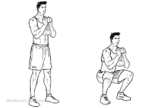

If you want to burn fat and lose weight fast you need to push yourself and get your muscles to experience new movements. And nobody likes to do the same work out all of the time so here are 29 fat-burning exercises that will add more variety to your life. The beauty of these exercises is that you can combine them into a cardio workout that takes 20 minutes or less. A full body workout that helps you lose body fat is achievable through a variety of exercises so why not see what you like here and make up your own routine? Let’s get started with crafting your fat burning workout.
1.GOBLET SQUAT:
Different from your traditional squat, a goblet squat is much safer and still does everything a regular squat would do. You will not have the weight putting pressure on your back. Having the weight in front of you will allow you to keep your back in a more upright position, allowing you to have better form. Great exercise for your legs and arms. Tones your thighs and hamstrings along with your upper arms. Compared to the traditional squat, goblet squats allow you to get deeper in the movement. You’ll be able to get lower in the actual squat forcing your muscles to work harder, burning more calories and fat.
 Many exercises that work your core don’t target the entire core area. Jackknife sit-ups actually get your entire core region, along with a few other muscle groups as well.
When done properly, this exercise can burn you out very quickly. You will be able to start shedding those abs, getting a slight arm workout, and working those legs all at once.
Getting the full range of motion for the exercise won’t be easy at first, but once your flexibility increases, your ability to get the most out of this exercise increases as well.
Many exercises that work your core don’t target the entire core area. Jackknife sit-ups actually get your entire core region, along with a few other muscle groups as well.
When done properly, this exercise can burn you out very quickly. You will be able to start shedding those abs, getting a slight arm workout, and working those legs all at once.
Getting the full range of motion for the exercise won’t be easy at first, but once your flexibility increases, your ability to get the most out of this exercise increases as well.
 This is a quick exercise that quickly engages your core and your arms.
This is an exercise that gets the fat targeted in your lower abs. This is one area that is one of the most difficult areas to get rid of fat.
Mountain Climbers help you target that hard area of fat while working your arms and chest. Not to mention, this exercise is also a good boost of fitness. Your lungs get a little expanded allowing you to have more air which will help you have more efficient workouts during any exercise.
This is a quick exercise that quickly engages your core and your arms.
This is an exercise that gets the fat targeted in your lower abs. This is one area that is one of the most difficult areas to get rid of fat.
Mountain Climbers help you target that hard area of fat while working your arms and chest. Not to mention, this exercise is also a good boost of fitness. Your lungs get a little expanded allowing you to have more air which will help you have more efficient workouts during any exercise.